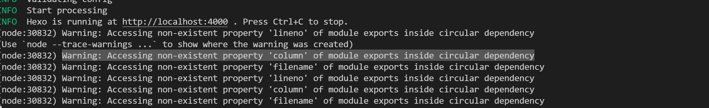
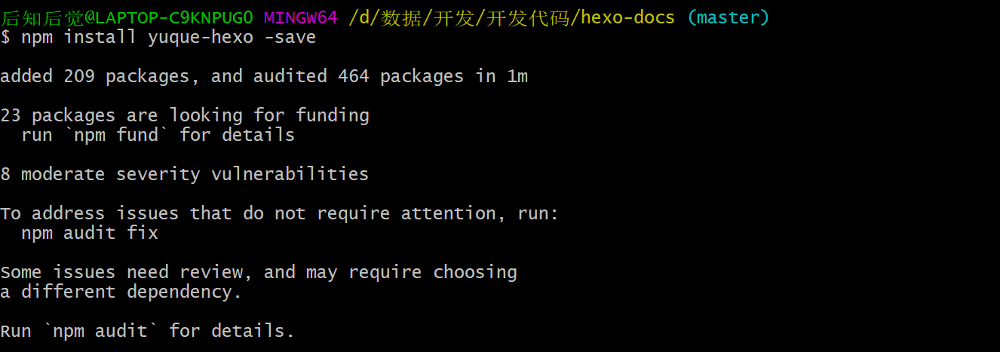

语雀使用
开发者
文档：https://www.yuque.com/yuque/developer/api
发送 http 请求
需要填写
1.token
2.user-agent
个人路径
https://www.yuque.com/houzhihoujue-zkge6 3. $url=”https://www.yuque.com/api/v2/users/houzhihoujue-zkge6";
3. $url=”https://www.yuque.com/api/v2/users/houzhihoujue-zkge6";
获取内容
<?php
//测试do_get
$url="https://www.yuque.com/api/v2/users/houzhihoujue-zkge6";
$params=array('name'=>'张三');
$headers=array(
"Content-Type:application/json;charset=utf-8",
"Accept:application/json;charset=utf-8",
"X-Auth-Token: 7tSew8wNmbWSsVwp2ltE3z7n7V1unklVFCqNupBn",
"User-Agent:hexo-yueque",
); //json序列化
$result=do_get($url,$params,$headers);
echojson_encode($result);
die();
return;
//测试do_post
$url="http://localhost:8081/SpringMVC01/user/addUser.html";
$params=array('id'=>1,'name'=>'张三');
$headers=array(
"Content-Type:application/json;charset=utf-8",
"Accept:application/json;charset=utf-8"
); //json序列化
$params=json_encode($params, JSON_FORCE_OBJECT);
$result=do_post($url,$params,$headers);
echojson_encode($result);
return;
functiondo_get($url, $params, $headers) {
// $url = "{$url}?" . http_build_query ( $params );
$ch = curl_init ();
curl_setopt ( $ch, CURLOPT_URL, $url );
curl_setopt ( $ch, CURLOPT_RETURNTRANSFER, 1 );
curl_setopt ( $ch, CURLOPT_CUSTOMREQUEST, 'GET' );
curl_setopt ( $ch, CURLOPT_TIMEOUT, 60 );
curl_setopt($ch, CURLOPT_SSL_VERIFYPEER, false); // 信任任何证书
curl_setopt($ch, CURLOPT_SSL_VERIFYHOST, 0);
// curl_setopt ( $ch, CURLOPT_POSTFIELDS, $params );
curl_setopt ( $ch, CURLOPT_HTTPHEADER, $headers );
$result = curl_exec ( $ch );
curl_close ( $ch );
return$result;
}
functiondo_post($url, $params, $headers) {
$ch = curl_init ();
curl_setopt ( $ch, CURLOPT_URL, $url );
curl_setopt ( $ch, CURLOPT_RETURNTRANSFER, 1 );
curl_setopt ( $ch, CURLOPT_CUSTOMREQUEST, 'POST' );
curl_setopt ( $ch, CURLOPT_POSTFIELDS, $params );
curl_setopt ( $ch, CURLOPT_HTTPHEADER, $headers );
curl_setopt ( $ch, CURLOPT_TIMEOUT, 60 );
$result = curl_exec ( $ch );
curl_close ( $ch );
return$result;
}
?>
hexo 初始化
hexo 有缓存，可以使用 hexo clean 清除
hexo 使用
创建一个文件夹
- hexo init
- npm run server
npm run server 出现的问题

出现问题的原因是 Node 版本过高
安装语雀使用

tags 使用
模板里要有 tag 页面
文档资源的 front matter 里需要设置这篇文章的标签
http://localhost:4000/tags/asd/
就可以出现同标签的所有文章
config.yml 里面可以设置 tags 总览———-tag_generator：true
这样就可以访问http://localhost:4000/tags/路径，里面是对所有标签的总览
page 页面

source 根目录的文件可以直接用这个路径
无论文章放在_post 下还是 tag 下 加载的都是 page 模板

如果在 tags 内填写文档，走的 page 页面

about 使用
如果 about 文件夹下有 index.md 的话，那么访问 localhost:4000/about 就会访问 index.md 使用 page 模板
如果 about 文件夹下没有 index.md 的话，那么访问 localhost:4000/about 如果注册的地址和模板载入
如果都没有，就会 404
问题
- category 如何形成总览要改源码？ 看源码
- 试试将整个代码目录结构理出来
- 最终想放在/blog 里面 然后 push 代码也往/blog 里面 push
- tag 和 cloundtag 的区别
- 为什么 toc 的目录无法
- 如何设置语雀的 tag 和 category
- 学 mart text 的使用
- 搜索制作
- 设置http://localhost:4000/tags/是所有分类标签
- 绿色框配置不知道配置的是什么
 11.代码块和各类文字结构是如何转换的
11.代码块和各类文字结构是如何转换的
12.npm run sync 不能够真正的替换
答：rm rf 删除文件夹内容再 dist? clean:yuque?
13.adpater 的图片本地化处理未做
可以联系语雀作者去问问问题
heox 文档不解之处
建站

配置
参数是什么意思，我明明是 source 文件夹存的这些，这些的默认值和参数该如何使用
不懂设置这个和如何看效果
这个分页分的是啥
命令
这个是做什么的
front-matter
这两个是啥意思

什么意思
资源文件夹
学习一下 将图片本地保存
模板
回退是什么意思
小点总结
1.文章的 front-matter 可以加 layout
可修改加载模板
2.想加一个关于我 /about 显示该如何做
回答：可以手动注册一个 about/index 在 render.js 中
3.全局变量（网站变量与页面变量等）
locals 就是全部网站变量的数据
pages
posts
_Document {
title: '学习内容',
urlname: 'hulv0z',
date: Moment<2022-01-01T12:56:08+08:00>,
_content: '\n' +
'看，自己还有这么多的未知领域\n' +
'\n' +
'\n' +
'---\n' +
'\n' +
'不知道谁说的一句话 考研是对青春的救赎\n' +
'\n' +
'---\n' +
'\n' +
'学 ipad 系统\n' +
'\n' +
'\n' +
'学注册表\n' +
'学文件保护\n' +
'学用户 学软件运行 捆绑软件？\n' +
'右键删除微软\n' +
'写操作系统使用\n' +
'重装老电脑\n' +
'hexo 语雀 github\n' +
'php 魔术方法\n',
source: '_posts/学习内容.md',
raw: '---\n' +
'title: 学习内容\n' +
'urlname: hulv0z\n' +
"date: '2022-01-01 12:56:08 +0800'\n" +
'tags: []\n' +
'categories: []\n' +
'---\n' +
'\n' +
'看，自己还有这么多的未知领域\n' +
'\n' +
'\n' +
'---\n' +
'\n' +
'不知道谁说的一句话 考研是对青春的救赎\n' +
'\n' +
'---\n' +
'\n' +
'学 ipad 系统\n' +
'\n' +
'\n' +
'学注册表\n' +
'学文件保护\n' +
'学用户 学软件运行 捆绑软件？\n' +
'右键删除微软\n' +
'写操作系统使用\n' +
'重装老电脑\n' +
'hexo 语雀 github\n' +
'php 魔术方法\n',
slug: '学习内容',
published: true,
updated: Moment<2022-01-28T22:08:32+08:00>,
comments: true,
layout: 'post',
photos: [],
link: '',
_id: 'ckyyhdgef002vqgv5c4m0bf9x',
content: '<p>看，自己还有这么多的未知领域<br></p>\n' +
'<hr>\n' +
'<p>不知道谁说的一句话 考研是对青春的救赎</p>\n' +
'<hr>\n' +
'<p>学 ipad 系统<br></p>\n' +
'<p>学注册表<br>学文件保护<br>学用户 学软件运行 捆绑软件？<br>右键删除微软<br>写操作系统使用<br>重装老电脑<br>hexo 语雀 github<br>php 魔术方法</p>\n',
site: [Object],
excerpt: '',
more: '<p>看，自己还有这么多的未知领域<br></p>\n' +
'<hr>\n' +
'<p>不知道谁说的一句话 考研是对青春的救赎</p>\n' +
'<hr>\n' +
'<p>学 ipad 系统<br></p>\n' +
'<p>学注册表<br>学文件保护<br>学用户 学软件运行 捆绑软件？<br>右键删除微软<br>写操作系统使用<br>重装老电脑<br>hexo 语雀 github<br>php 魔术方法</p>\n',
path: [Getter],
permalink: [Getter],
full_source: [Getter],
asset_dir: [Getter],
tags: [Getter],
categories: [Getter],
prev: [_Document],
next: [_Document],
__post: true
},
问题
这些数据怎么放 放哪里
然后数据对象里面有些参数的具体参数不知道 需要测试